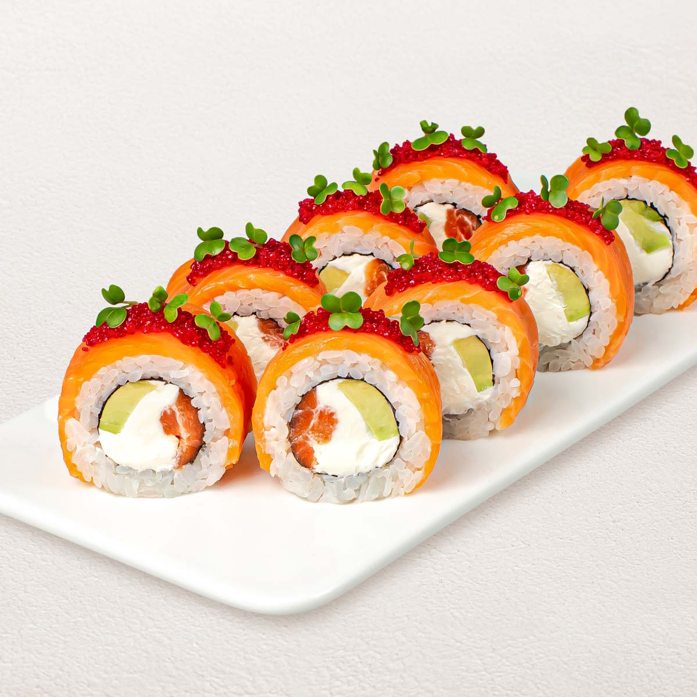

Rolls
home

These are Sushi Rolls
Sushi rolls are the best food i've ever eaten,
i would never try to make them myself but i'll love to eat them. They're not hard to make, just need the right technique.
Ingredients:
- Sea weed
- rice
- cheese
- cucumber
- fumed salmon
- caviar
- shrimp
Steps:
- cook your rice;
- put a plast of fumed salmon;
- put on top a list of sea weed;
- spread your rice on the sea weed;
- put some sliced cucumber in the middle;
- put some shrimps next to it;
- roll the thing up however you'll manage and put some caviar on top
- et voila ! bon appetit !